🛸 咔嚓！太空！
Clank! In! Space!: A Deck-Building Adventure · 设计：Paul Dennen Jr. · Renegade Game Studios 出版 · 2–4 人 · 官方英文规则书全文翻译（12 页 · AI 辅助机翻）
本页收录《咔嚓！太空！》（Clank! In! Space!: A Deck-Building Adventure, 2017）的原版官方规则书全部 12 页（底本：Renegade Game Studios 官方产品页（规则书免费下载入口；本机网络无法连接该站点，未能取到 PDF 直链），rules.pdf），逐页随图排列，点击任意图片即可放大查看；每页下方默认折叠了该页的 AI 辅助中文机翻对照，需要时可展开。规则内容归 Renegade Game Studios 及版权方所有，收录仅供个人学习查阅。
整理说明：机翻对照按本站术语口径对齐（牌库/手牌/回合/轮/板块/指示物等），PDF 图文混排页的语序可能与原书视觉顺序略有出入；规则细节请一律以页面上方原书页面为准。
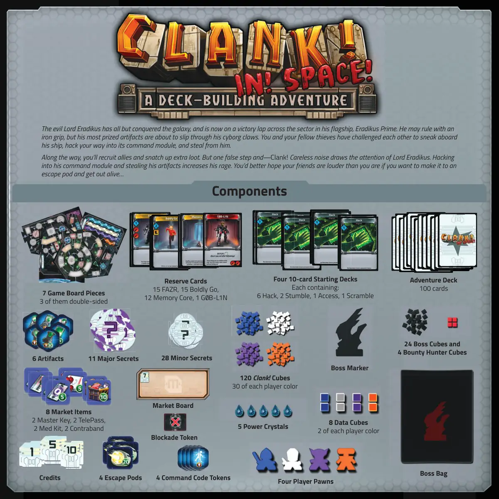
📝 第 1 页 AI 机翻对照（点击展开）
邪恶领主艾拉迪库斯(Eradikus)几乎已经征服了整个银河系，现在正乘坐他的旗舰"艾拉迪库斯号"(Eradikus Prime)在星系内进行胜利巡游。他可能以铁腕统治，但他最珍贵的宝物即将从他的赛博格爪中溜走。你和你的同伙们互相挑战，潜入他的飞船，破解其指挥模块，并从他那里偷取宝物。
在此过程中，你将招募盟友并获取额外的战利品。但只要一步走错——咔嚓！粗心的噪音会吸引艾拉迪库斯的注意。破解他的指挥模块并偷取他的宝物会增加他的怒气。如果你想登上逃生舱并活着离开，你最好希望你的朋友们比你更吵闹……
7个游戏板块组件
其中3个是双面的
冒险牌库
100张牌
预留牌
15张FAZR，15张Boldly Go，
12张Memory Core，1张G0/B-L1N
四组10张起始牌组
每组包含：
6张Hack，2张Stumble，1张Access，1张Scramble
120个咔嚓！方块
每种玩家颜色30个
四个玩家棋子
6件宝物
11件主要秘密
28件次要秘密
4个逃生舱
4个指挥代码指示物
积分
Boss标记
Boss袋
8件市场物品
2件Master Key，2件TelePass，
2件Med Kit，2件Contraband
封锁令指示物
8个数据方块
每种玩家颜色2个
5个能量水晶
24个Boss方块和
4个赏金猎人方块
市场板块
组件
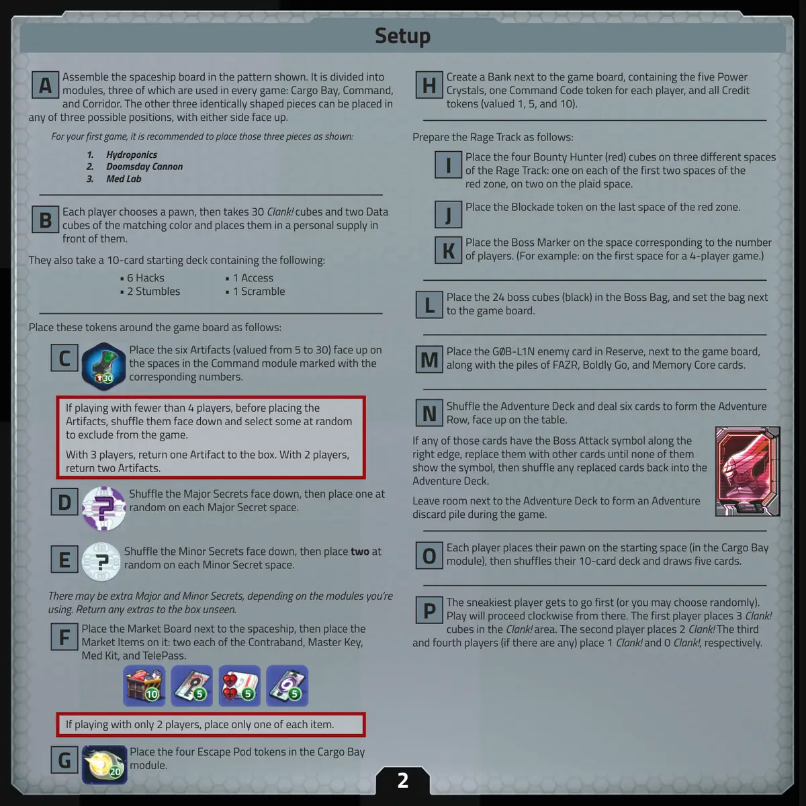
📝 第 2 页 AI 机翻对照（点击展开）
A
按照图示组装宇宙飞船版图。它被划分为多个模块，其中三个模块在每局游戏中都会使用：货舱、指挥舱和走廊。另外三个形状相同的板块可以放置在任意三个可能的位置，任意一面朝上。
对于你的第一局游戏，建议按照图示放置这三个板块：
1.
水培农场 (Hydroponics)
2.
末日大炮 (Doomsday Cannon)
3.
医疗实验室 (Med Lab)
B
每位玩家选择一个棋子，然后拿取30个"克朗!"方块和两个对应颜色的数据方块，并将它们放在自己面前的个人供应区中。
他们还拿取一个包含以下卡牌的10张起始牌库：
• 6张黑客 (Hacks)
• 1张访问 (Access)
• 2张绊倒 (Stumbles)
• 1张混乱 (Scramble)
按照以下方式将这些指示物放置在游戏版图周围：
C
将六个神器（价值从5到30）正面朝上放置在指挥舱模块中标记有相应数字的格子上。
如果少于4名玩家进行游戏，在放置神器前，将它们背面朝上洗混，然后随机选择一些排除在游戏之外。
3名玩家时，将一个神器放回盒中。2名玩家时，将两个神器放回盒中。
D
将主要秘密背面朝下洗混，然后在每个主要秘密格子上随机放置一个。
E
将次要秘密背面朝下洗混，然后在每个次要秘密格子上随机放置两个。
根据你使用的模块，可能会有多余的主要秘密和次要秘密。将多余的未看过的秘密放回盒中。
F
将市场板块放置在宇宙飞船旁边，然后将市场物品放在上面：违禁品、万能钥匙、医疗包和通行证各两个。
如果只有2名玩家进行游戏，每种物品只放置一个。
G
将四个逃生舱指示物放置在货舱模块中。
H
在游戏版图旁边创建一个银行，包含五个能量水晶、每个玩家一个指挥码指示物，以及所有信用点指示物（价值1、5和10）。
按照以下方式准备愤怒轨道：
I
将四个赏金猎人（红色）方块放在愤怒轨道的三个不同格子上：红色区域的前两个格子上各放一个，格子格子上放两个。
J
将封锁指示物放在红色区域的最后一个格子上。
K
将首领标记放在与玩家数量相对应的格子上。（例如：4人游戏时放在第一个格子上。）
L
将24个首领方块（黑色）放入首领袋中，并将袋子放在游戏版图旁边。
M
将G0/B-L1N敌人卡牌放在储备区，放在游戏版图旁边，以及FAZR、大胆前行和记忆核心卡牌堆。
N
洗混冒险牌库，然后发六张牌形成冒险牌列，正面朝上放在桌子上。
如果这些卡牌中有任何一张在右边缘有首领攻击符号，用其他卡牌替换它们，直到没有卡牌显示该符号，然后将替换的卡牌洗回冒险牌库。
在冒险牌库旁边留出空间，用于形成冒险
游戏期间的弃牌堆。
O
每位玩家将自己的棋子放置在起始格（在货舱模块中），然后洗匀他们的10张牌库并摸5张牌。
P
最狡猾的玩家先开始（或者你可以随机选择）。游戏将顺时针进行。第一位玩家在克朗克区域放置3个克朗克！方块。第二位玩家放置2个克朗克！第三和第四位玩家（如果有）分别放置1个克朗克！和0个克朗克！。
设置
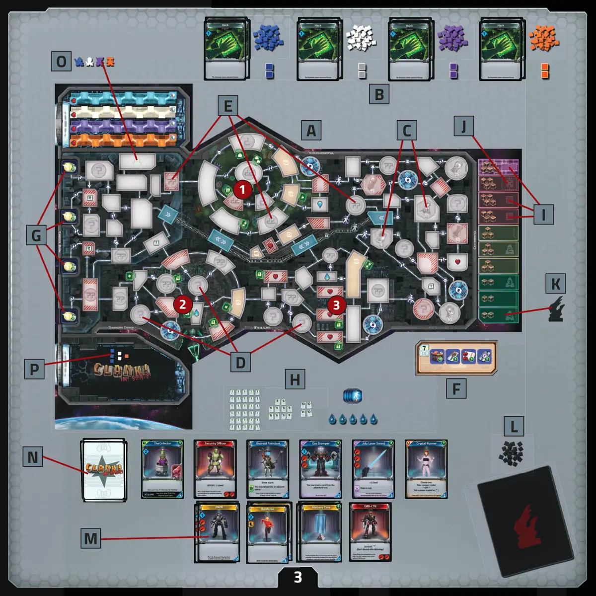
📝 第 3 页 AI 机翻对照（点击展开）
B
A
C
E
D
F
K
L
M
O
P
N
H
J
I
G
计划卡牌示例
起始资源：
- 4张卡牌
- 2个指示物
特殊能力： 在你的回合，你可以额外执行一个"建造"行动，但必须支付1张卡牌作为额外费用。
选择你的计划
在游戏开始前，玩家们应该从提供的"计划"卡牌中选择一张。每个玩家应该选择不同的计划，如果可能的话。如果玩家数量超过可用的计划卡牌数量，则某些玩家可能需要选择相同的计划。
选择计划是游戏设置的一部分，应该在分发起始资源之前完成。
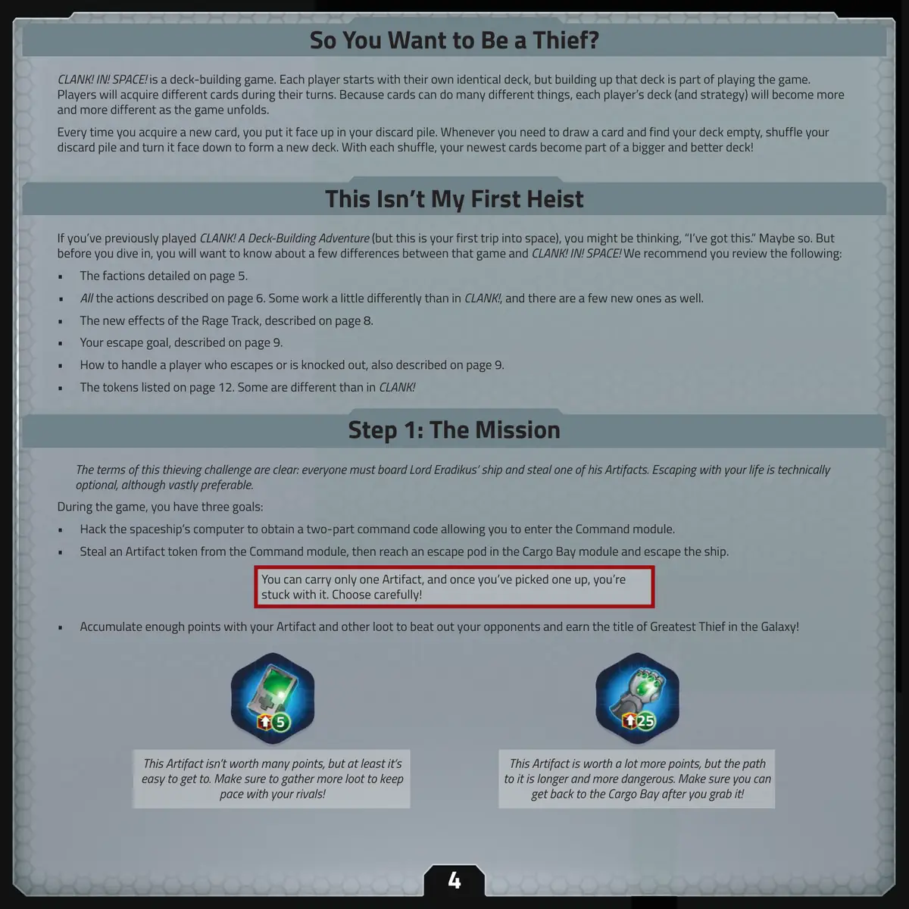
📝 第 4 页 AI 机翻对照（点击展开）
这次偷窃挑战的条款很明确：每个人都必须登上 Eradikus 大人的飞船并偷走他的一件神器。带着你的性命逃离在技术上来说是可选的，尽管这要受欢迎得多。
在游戏期间，你有三个目标：
•
入侵飞船的计算机以获取两部分指令代码，让你能够进入指挥舱。
•
从指挥舱偷取一个神器指示物，然后到达货舱舱的逃生舱并逃离飞船。
你只能携带一件神器，一旦你拿起了一件，你就必须带着它。谨慎选择！
•
通过你的神器和其他战利品积累足够的分数，超越你的对手，赢得银河系最伟大窃贼的头衔！
这件神器值不了多少分，但至少很容易拿到。确保收集更多战利品以跟上你的对手！
这件神器值更多的分，但通往它的路径更长也更危险。确保你在拿到它后能回到货舱舱！
CLANK! IN! SPACE! 是一款牌库构筑游戏。每位玩家开始时都有自己相同的牌库，但构建这个牌库是游戏的一部分。
玩家将在他们的回合中获得不同的卡牌。因为卡牌可以做很多事情，随着游戏的进行，每位玩家的牌库（和策略）会变得越来越不同。
每次你获得一张新卡牌时，你将其面朝上放入你的弃牌堆。当你需要摸牌但发现你的牌库已空时，洗混你的弃牌堆并将其面朝下形成一个新的牌库。每次洗牌时，你最新的卡牌会成为更大更好的牌库的一部分！
如果你之前玩过 CLANK! A Deck-Building Adventure（但这是你第一次进入太空），你可能在想，"我懂这个了"。也许吧。但在你投入之前，你会想知道那款游戏和 CLANK! IN! SPACE! 之间的一些区别。我们建议你回顾以下内容：
•
第 5 页详细描述的派系。
•
第 6 页描述的所有行动。有些与 CLANK! 中的工作方式略有不同，也有一些新的行动。
•
第 8 页描述的怒气轨道的新效果。
•
第 9 页描述的你的逃离目标。
•
如何处理逃离或被淘汰的玩家，也在第 9 页描述。
•
第 12 页列出的指示物。有些与 CLANK! 中的不同。
所以你想成为一名窃贼？
这不是我的第一次抢劫
第 1 步：任务
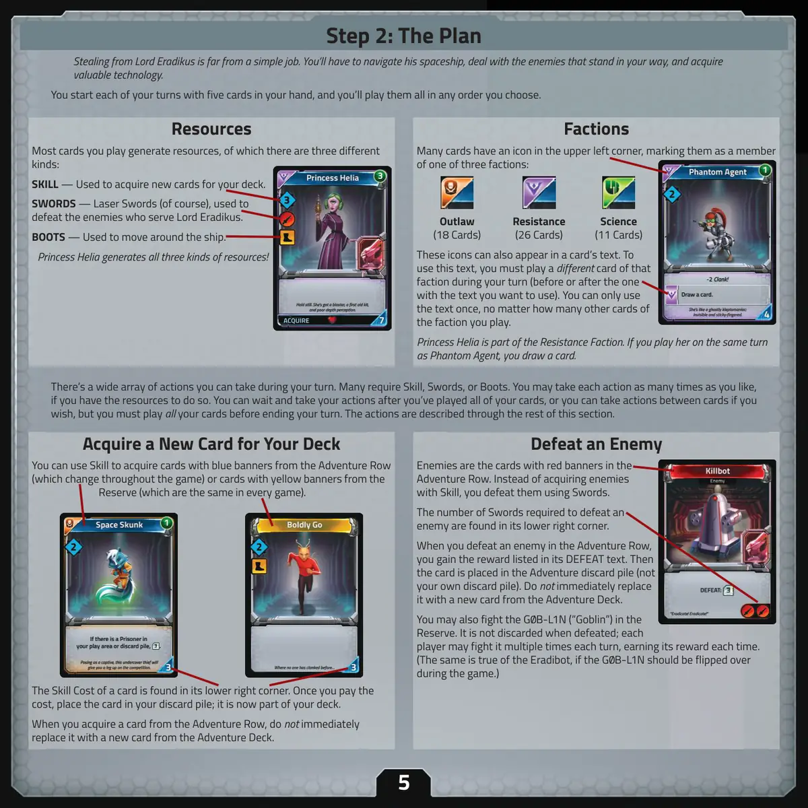
📝 第 5 页 AI 机翻对照（点击展开）
从埃拉迪克斯勋爵那里偷窃绝非易事。你必须驾驶他的飞船，应对挡路的敌人，并获得宝贵的技术。
每个回合开始时，你的手牌中有五张卡牌，你可以按任意顺序打出所有这些卡牌。
为你的牌库获取新卡
你可以使用技能从冒险行（游戏中会变化）中获取带有蓝色旗帜的卡牌，或者从储备区（每局游戏都相同）中获取带有黄色旗帜的卡牌。
卡牌的技能成本位于其右下角。支付成本后，将卡牌放入你的弃牌堆；它现在已成为你牌库的一部分。
当你从冒险行获取卡牌时，不要立即用冒险牌库中的新卡牌替换它。
击败敌人
敌人是冒险行中带有红色旗帜的卡牌。你可以使用技能获取敌人，但需要使用剑来击败他们。
击败敌人所需的剑数位于其右下角。
当你击败冒险行中的敌人时，你会获得其"击败"文本中列出的奖励。然后将该卡牌放入冒险弃牌堆（不是你自己的弃牌堆）。不要立即用冒险牌库中的新卡牌替换它。
你也可以在储备区中与G0/B-L1N("哥布林")战斗。它被击败后不会被弃置；每位玩家每回合可以多次与它战斗，每次都能获得其奖励。
（如果在游戏过程中G0/B-L1N被翻转过来，那么Eradibot也是如此。）
资源
你打出的大多数卡牌都会产生资源，共有三种不同类型：
技能 — 用于为你的牌库获取新卡牌。
剑 — 激光剑（当然），用于击败效忠于埃拉迪克斯勋爵的敌人。
靴子 — 用于在飞船上移动。
公主赫莉娅会产生所有三种资源！
派系
许多卡牌在左上角有一个图标，标记它们属于三个派系之一：
不法之徒
(18张卡牌)
抵抗组织
(26张卡牌)
科学
(11张卡牌)
这些图标也可能出现在卡牌文本中。要使用此文本，你必须在你的回合中打出一张该派系的另一张卡牌（在你想使用文本的卡牌之前或之后）。无论你打出多少张该派系的卡牌，只能使用该文本一次。
公主赫莉娅属于抵抗组织派系。如果你在同一回合打出她与幽灵特工，你可以摸一张牌。
在你的回合中，你可以采取多种行动。许多行动需要技能、剑或靴子。如果你有足够的资源，可以随意采取每种行动。你可以等待，在打完所有卡牌后再采取行动，或者也可以在卡牌之间采取行动。
第2步：计划
在游戏开始时，每个玩家获得一张"计划"卡牌（Plan card）。这张卡牌代表你的角色在游戏中将如何发展。它包含两个部分：你的起始资源和你的特殊能力。
你的起始资源包括：
- 3张卡牌
- 1个米宝
- 1个指示物
将你的米宝和指示物放在你的个人版图上。将你的3张起始卡牌加入你的手牌。
你的特殊能力印在你的"计划"卡牌上。你可以在你的回合使用这个能力，如能力描述所示。你可以在你的回合的任何时候使用你的能力，除非能力说明有其他限制。
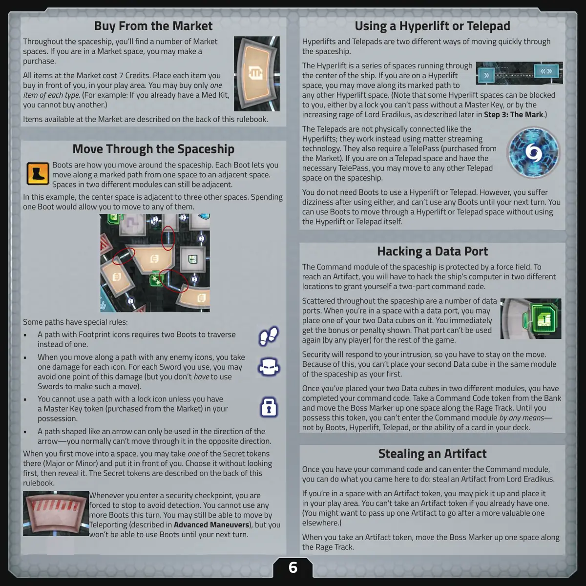
📝 第 6 页 AI 机翻对照（点击展开）
从市场购买
在整个宇宙飞船上，你会找到一些市场区域。如果你在一个市场区域，你可以进行购买。
市场中的所有物品都花费7点信用点。将你购买的每件物品放在你面前，在你的游戏区域内。每种类型的物品你只能购买一件。（例如：如果你已经有一个医疗包，你不能购买另一个。）
市场可购买的物品描述在本规则书背面。
在宇宙飞船中移动
靴子是你在宇宙飞船中移动的方式。每双靴子让你沿着标记的路径从一个区域移动到相邻的区域。两个不同模块的区域仍然可以是相邻的。
在这个例子中，中心区域与另外三个区域相邻。花费一双靴子可以让你移动到其中任何一个。
有些路径有特殊规则：
•
带有脚印图标的路径需要花费两双靴子才能穿过，而不是一双。
•
当你沿着带有任何敌人图标的路径移动时，每个图标会造成一点伤害。对于你使用的每把剑，你可以避免一点这种伤害（但你不必使用剑来进行这样的移动）。
•
除非你拥有主钥匙指示物（从市场购买），否则你不能使用带有锁图标的路径。
•
箭头形状的路径只能按箭头方向使用——通常你不能反向穿过它。
当你第一次进入一个区域时，你可以拿取那里的一个秘密指示物（主要或次要）并将其放在你面前。先不查看选择它，然后揭示它。秘密指示物描述在本规则书背面。
每当进入安检点时，你必须停下来以避免被发现。本回合你不能使用任何更多的靴子。你仍然可以通过传送（在高级机动中描述）来移动，但在你的下一个回合之前，你将无法使用靴子。
使用超电梯或传送垫
超电梯和传送垫是两种在宇宙飞船中快速移动的不同方式。
超电梯是一系列穿过飞船中心的空间。如果你在一个超电梯空间上，你可以沿着其标记的路径移动到任何其他超电梯空间。（注意，一些超电梯空间可能对你被封锁，要么是你没有主钥匙无法通过的锁，要么是厄拉迪克斯领主的日益增长的愤怒，如后面的第3步：标记所述。）
传送垫不像超电梯那样物理连接；它们使用物质流技术工作。它们还需要传送通行证（从市场购买）。如果你在一个传送垫空间上并拥有必要的传送通行证，你可以移动到宇宙飞船上任何其他传送垫空间。
使用超电梯或传送垫不需要靴子。然而，使用任何一种后你会感到头晕，直到你的下一个回合才能使用任何靴子。你
可以使用靴子穿过超升降机或传送垫空间，而不必使用超升降机或传送垫本身。
入侵数据端口
宇宙飞船的指挥模块受到力场保护。要获取一件神器，你必须在两个不同的位置入侵飞船的计算机，以获取两部分组成的指挥代码。
宇宙飞船中散布着多个数据端口。当你位于有数据端口的空间时，你可以将你的两个数据立方体之一放在上面。你立即获得显示的奖励或惩罚。该端口在本游戏剩余时间内不能被任何玩家再次使用。
安全系统会响应你的入侵，因此你必须保持移动。因此，你不能将第二个数据立方体放在与第一个相同的飞船模块中。
一旦你在两个不同的模块中放置了两个数据立方体，你就完成了你的指挥代码。从银行中取一个指挥代码指示物，并将Boss标记沿愤怒轨道向上移动一格。在拥有此指示物之前，你不能通过任何方式进入指挥模块——不能通过靴子、超升降机、传送垫，也不能通过你牌库中卡牌的能力。
窃取神器
一旦你拥有指挥代码并可以进入指挥模块，你就可以做你来这里要做的事：从艾拉迪克斯勋爵那里窃取一件神器。
如果你位于有神器指示物的空间，你可以拾取它并将其放置在你的游戏区域中。如果你已经拥有一个神器指示物，你不能获取另一个。（你可能想放弃一个神器，去获取别处更有价值的那个。）
当你获取神器指示物时，将Boss标记沿愤怒轨道向上移动一格。
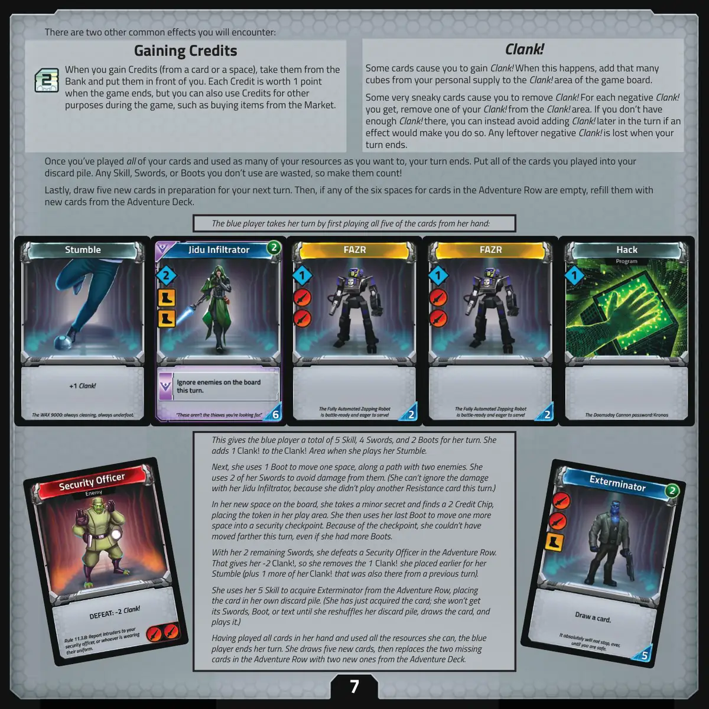
📝 第 7 页 AI 机翻对照（点击展开）
你还会遇到其他两种常见效果：
当你打出了所有卡牌并使用了你想要使用的所有资源后，你的回合结束。将你打出的所有卡牌放入你的弃牌堆。任何你未使用的技能、剑或靴子都会被浪费，所以要善加利用！
最后，摸五张新牌为下一回合做准备。然后，如果冒险行的六个卡牌位置中有空位，则从冒险牌库中用新牌补充这些空位。
获得信用点
当你获得信用点（来自卡牌或区域）时，从银行中取出它们并放在你面前。每个信用点在游戏结束时值1分，但在游戏过程中你也可以将信用点用于其他目的，例如从市场购买物品。
克朗克！
有些卡牌会让你获得克朗克！当这种情况发生时，从你的个人供应中取出相应数量的立方体，放入游戏版的克朗克！区域。
有些非常狡猾的卡牌会让你移除克朗克！对于你获得的每个负克朗克！，从克朗克！区域中移除一个你的克朗克！。如果你那里的克朗克！不够，你可以在本回合后期如果某个效果会让你添加克朗克！时，改为避免添加克朗克！。任何剩余的负克朗克！在你的回合结束时都会消失。
蓝色玩家通过先打出手中所有五张卡牌来开始她的回合：
这为蓝色玩家在本回合总共提供了5点技能、4点剑和2点靴子。当她打出她的绊倒卡时，她在克朗克！区域添加了1个克朗克！。
接下来，她使用1点靴子沿着一条有两个敌人的路径移动一格。她使用2点剑来避免受到他们的伤害。（她不能用她的渗透者忽略伤害，因为她本回合没有打出另一张抵抗卡牌。）
在她在版图上的新位置，她获得了一个次要秘密，并找到了一个2信用点筹码，将指示物放在她的游戏区域。然后她使用最后1点靴子再移动一格，进入一个安检点。由于安检点的存在，即使她有更多的靴子，她本回合也无法移动更远。
用她剩余的2点剑，她击败了冒险行中的一名安保人员。这给了她-2克朗克！，因此她移除了她之前因绊倒卡而放置的1克朗克！（加上另一个也因前一回合而留在那里的她的克朗克！）。
她使用她的5点技能从冒险行中获得了灭虫者卡，将卡牌放入她自己的弃牌堆。（她刚刚获得了这张卡；直到她重新洗牌弃牌堆、摸到这张卡并打出它，她才能获得它的剑、靴子或文本效果。）
打出了手中所有卡牌并使用了所有可用的资源后，蓝色玩家结束她的回合。她摸五张新牌，然后用冒险牌库中的两张新牌替换冒险行中缺失的两张卡牌。
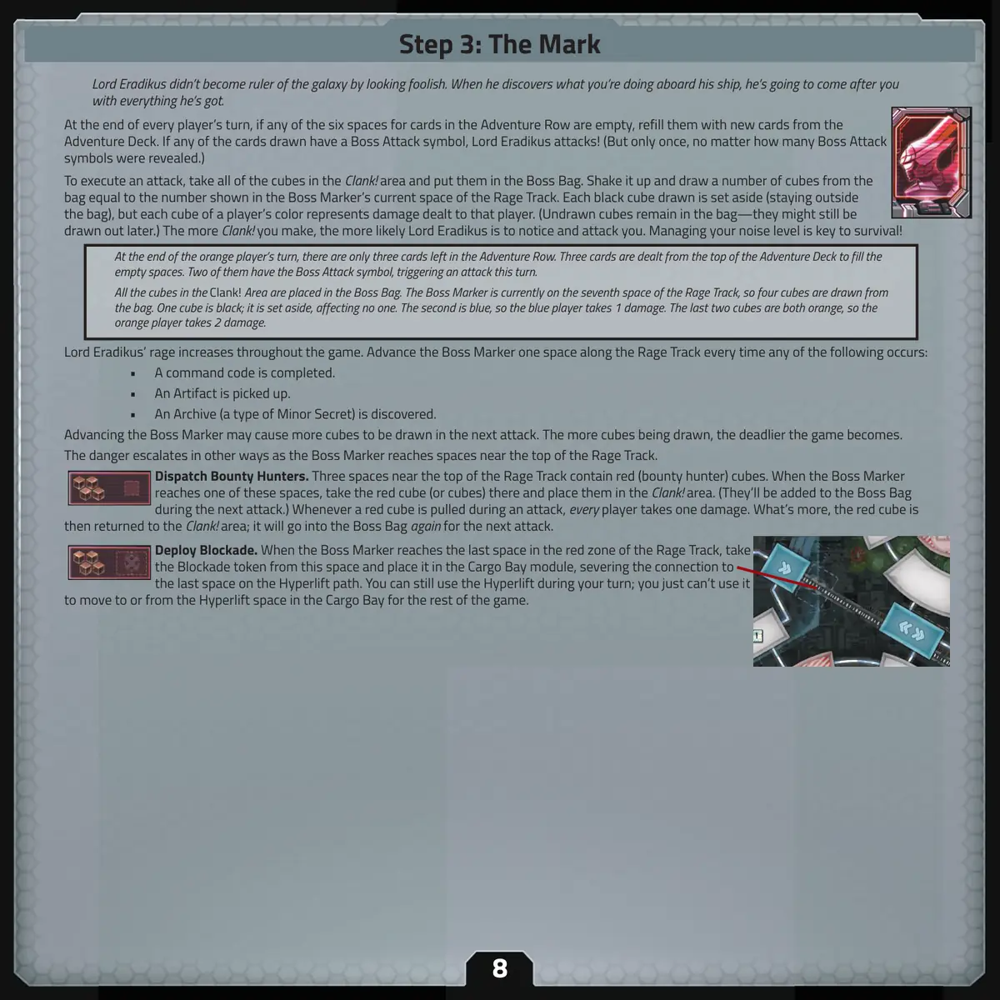
📝 第 8 页 AI 机翻对照（点击展开）
Lord Eradikus（埃拉迪库斯勋爵）不是靠看起来愚蠢才成为银河系统治者的。当他发现你在他的飞船上所做的事情时，他会用尽一切手段来追捕你。
在每个玩家的回合结束时，如果冒险牌列（Adventure Row）的六个卡牌位置中有任何一个空缺，则从冒险牌库（Adventure Deck）中抽取新卡牌来填补这些空缺。如果抽出的任何卡牌上有Boss攻击符号，Lord Eradikus就会发动攻击！（但无论揭示了多少个Boss攻击符号，只攻击一次。）
要执行攻击，将"克朗克"区域（Clank! area）中的所有方块放入Boss袋（Boss Bag）中。摇晃袋子，从袋中抽取与Boss标记（Boss Marker）在愤怒轨道（Rage Track）当前所在空间所示数量相等的方块。抽出的每个黑色方块被放在一边（留在袋子外），但每个玩家颜色的方块代表对该玩家造成的伤害。（未抽出的方块留在袋中——它们稍后仍可能被抽出。）你制造的"克朗克"越多，Lord Eradikus就越有可能注意到并攻击你。控制你的噪音水平是生存的关键！
在橙色玩家的回合结束时，冒险牌列中只剩下三张牌。从冒险牌库顶部抽取三张牌来填补空缺。其中两张有Boss攻击符号，本回合触发攻击。
所有"克朗克"区域中的方块被放入Boss袋中。Boss标记当前位于愤怒轨道的第七个空间，因此从袋中抽取四个方块。一个是黑色方块；它被放在一边，不影响任何人。第二个是蓝色方块，所以蓝色玩家受到1点伤害。最后两个方块都是橙色，所以橙色玩家受到2点伤害。
Lord Eradikus的愤怒在整个游戏过程中不断增加。每当发生以下任何情况时，将Boss标记沿愤怒轨道向前移动一个空间：
•
完成一个命令代码。
•
拾取一件神器（Artifact）。
•
发现一个档案馆（一种次要秘密类型）。
推进Boss标记可能导致下次攻击时抽取更多方块。抽取的方块越多，游戏就越致命。
当Boss标记接近愤怒轨道顶部时，危险会以其他方式升级。
派遣赏金猎人。愤怒轨道顶部附近有三个空间包含红色（赏金猎人）方块。当Boss标记到达其中一个空间时，将该处的红色方块（或多个方块）取出并放入"克朗克"区域。（它们将在下次攻击期间被添加到Boss袋中。）每当在攻击中抽出红色方块时，每个玩家都受到1点伤害。此外，红色方块随后返回"克朗克"区域；它将在下次攻击时再次进入Boss袋。
部署封锁。当Boss标记到达愤怒轨道红色区域的最后一个空间时，取出
从该空间移除封锁指示物，并将其放置在货舱模块中，切断与超速电梯路径上最后一个空间的连接。在你的回合期间你仍然可以使用超速电梯；只是你不能再使用它来移动到或来自货舱中的超速电梯空间，直到游戏结束。
步骤3：标记
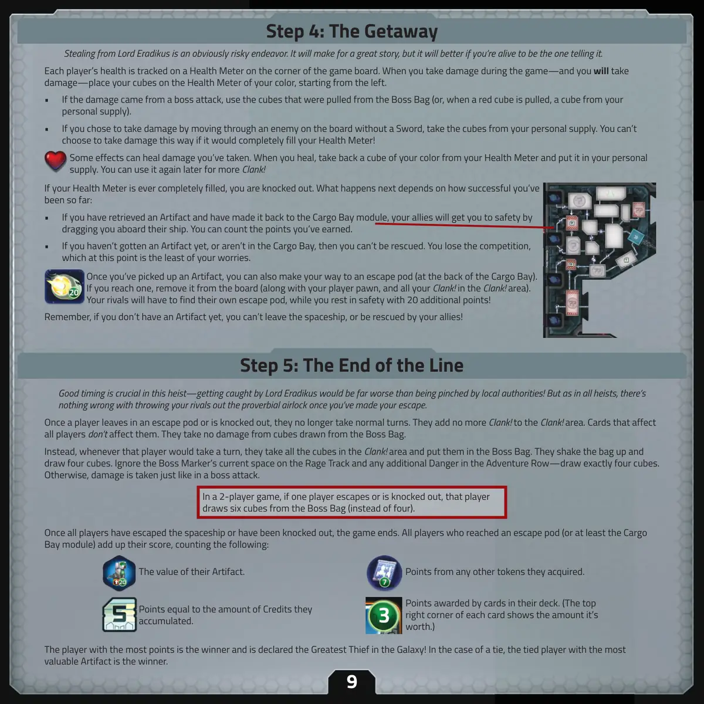
📝 第 9 页 AI 机翻对照（点击展开）
从埃拉迪克斯勋爵那里偷窃显然是一项冒险之举。这将是一个精彩的故事，但如果你能活着讲述这个故事，那就更好了。
每位玩家的生命值在游戏版图角落的生命值表上追踪。当你在游戏中受到伤害——你确实会受到伤害——将你的立方体放在你颜色的生命值表上，从左边开始放置。
• 如果伤害来自Boss攻击，使用从Boss袋中抽出的立方体（或者，当抽出红色立方体时，使用你个人供应中的立方体）。
• 如果你选择在没有剑的情况下穿过版图上的敌人而受到伤害，从你的个人供应中取出立方体。如果这样做会完全填满你的生命值表，你不能选择这种方式受到伤害！
某些效果可以治愈你受到的伤害。当你治疗时，从你的生命值表中取回一个你颜色的立方体，并将其放入你的个人供应中。你可以在以后再次使用它来获得更多Clank！
如果你的生命值表被完全填满，你将被击倒。接下来发生的事情取决于你迄今为止的成功程度：
• 如果你已经取回了神器并返回了货物舱模块，你的盟友会把你拖到他们的船上让你安全。你可以计算你获得的分数。
• 如果你还没有获得神器，或者不在货物舱，那么你就无法获救。你输掉了比赛，而这此时是你最不用担心的事情。
一旦你拿起了一个神器，你也可以前往一个逃生舱（位于货物舱的后面）。如果你到达了一个，将其从版图上移除（连同你的玩家棋子，以及Clank区域中你所有的Clank！）。你的对手们必须自己寻找逃生舱，而你则安全地休息，并获得额外的20分！
记住，如果你还没有神器，你不能离开宇宙飞船，也不能被你的盟友救援！
这次抢劫的时机至关重要——被埃拉迪克斯勋爵抓住比被当地当局抓住要糟糕得多！但就像所有抢劫一样，一旦你成功逃脱，把你的对手扔出传说中的气闸门也没有什么不对的。
一旦玩家通过逃生舱离开或被击倒，他们不再进行正常回合。他们不再向Clank区域添加更多Clank！影响所有玩家的卡牌不再影响他们。他们不会从Boss袋中抽出的立方体受到伤害。
相反，每当该玩家应该进行回合时，他们取走Clank区域中的所有立方体并放入Boss袋。他们摇晃袋子并抽出四个立方体。忽略愤怒轨道上Boss标记的当前位置和冒险行中的任何额外危险——恰好抽出四个立方体。否则，伤害的承受就像Boss攻击一样。
在2人游戏中，如果一名玩家逃脱或被淘汰，该玩家从Boss Bag中抽取六个立方体（而不是四个）。
当所有玩家都逃离飞船或被淘汰后，游戏结束。所有到达逃生舱（或至少到达货舱模块）的玩家将他们的分数相加，计算以下内容：
他们文物的价值。
等于他们积累的信用点数量的分数。
他们获得的任何其他指示物的分数。
他们牌库中卡牌授予的分数。（每张卡牌的右上角显示了它的价值。）
得分最高的玩家是获胜者，并被宣布为银河系最伟大的窃贼！如果平局，则拥有最有价值文物的平局玩家是获胜者。
第4步：逃脱
第5步：终结
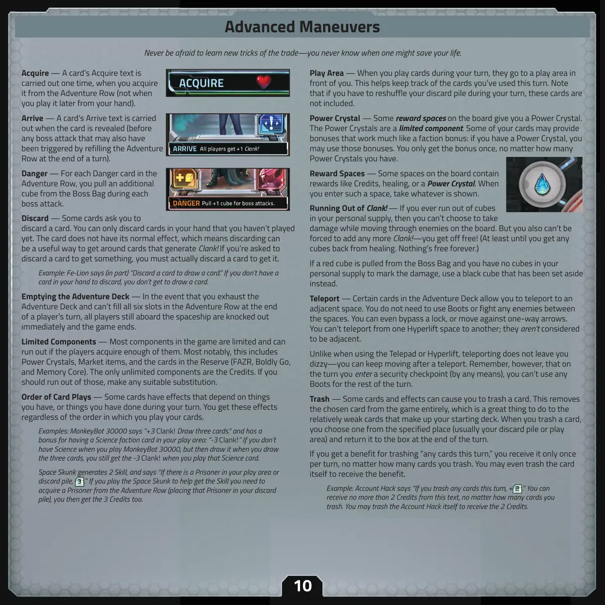
📝 第 10 页 AI 机翻对照（点击展开）
获取（Acquire）—— 卡牌的获取文本会在你从冒险行（Adventure Row）获取该卡牌时执行一次（而不是在你之后从手牌中打出它时）。
到达（Arrive）—— 卡牌的到达文本会在卡牌被揭示时执行（在任何可能因在回合结束时补充冒险行而触发的Boss攻击之前）。
危险（Danger）—— 对于冒险行中的每张危险卡牌，在每个Boss攻击期间，你需要从Boss袋中额外抽取一个立方体。
弃牌（Discard）—— 有些卡牌要求你弃掉一张卡牌。你只能弃掉你手中尚未打出的卡牌。该卡牌不会产生其正常效果，这意味着弃牌可以是一种规避产生Clank!卡牌的有效方式。如果你被要求弃掉一张卡牌以获得某物，你必须实际弃掉一张卡牌才能获得它。
示例：Fe-Lion卡牌部分内容为"弃掉一张卡牌以摸一张牌"。如果你手中没有可弃的卡牌，你就不能摸牌。
冒险牌库耗尽（Emptying the Adventure Deck）—— 如果你耗尽了冒险牌库，并且在玩家回合结束时无法填满冒险行的六个位置，那么所有仍在飞船上的玩家立即被淘汰，游戏结束。
有限组件（Limited Components）—— 游戏中的大多数组件都是有限的，如果玩家获取了足够多的组件，可能会耗尽。最值得注意的是，这包括能量水晶（Power Crystals）、市场物品（Market items）以及储备区（Reserve）中的卡牌（FAZR、Boldly Go和Memory Core）。唯一的无限组件是信用点（Credits）。如果你用完了信用点，可以用任何合适的替代品替代。
卡牌打出顺序（Order of Card Plays）—— 有些卡牌的效果取决于你拥有的东西，或你在回合期间做过的事情。无论你以何种顺序打出卡牌，你都能获得这些效果。
示例：MonkeyBot 30000卡牌写着"+3 Clank! 摸三张牌"，并且拥有一个在你游戏区域拥有派系卡牌的加成："-3 Clank!"。如果你在打出MonkeyBot 30000时没有科学（Science）派系卡牌，但在摸三张牌时抽到了，当你打出那张科学卡牌时，你仍然获得-3 Clank!的效果。
太空臭鼬（Space Skunk）产生2点技能，并写着"如果你的游戏区域或弃牌堆中有囚犯（Prisoner），获得3信用点。"如果你打出太空臭鼬以帮助你获得从冒险行获取囚犯所需的技能（将该囚犯放入你的弃牌堆），你也会获得那3信用点。
游戏区域（Play Area）—— 当你在你的回合期间打出卡牌时，它们会进入你面前的游戏区域。这有助于追踪你本回合使用过的卡牌。注意，如果你在你的回合期间需要重新洗弃牌堆，这些卡牌不会被包含在内。
能量水晶（Power Crystal）—— 版图上的某些奖励空间会给你一个能量水晶。能量水晶是一种有限组件。你的一些卡牌可能会提供
类似于派系奖励的奖励：如果你拥有能量水晶，你可以使用这些奖励。无论你有多少个能量水晶，你只能获得一次奖励。
奖励空间 — 版图上的某些空间包含奖励，如信用点、治疗或能量水晶。当你进入这样的空间时，拿取所示的所有物品。
骰子用尽 — 如果你个人供应中的骰子用尽，那么你在穿过版图上的敌人时就不能选择承受伤害。但你也不能被迫添加更多的骰子！你可以免费逃脱！（至少直到你通过治疗重新获得一些骰子。没有什么东西是永远免费的。）
如果从Boss袋中抽出一个红色骰子，而你个人供应中没有骰子来标记伤害，则使用一个被单独放置的黑色骰子代替。
传送 — 冒险牌组中的某些卡牌允许你传送到相邻的空间。你不需要使用靴子或在这些空间之间与任何敌人战斗。你甚至可以绕过锁，或沿着单向箭头移动。你不能从一个超升降机空间传送到另一个；它们不被视为相邻。
与使用传送垫或超升降机不同，传送不会让你头晕——你可以在传送后继续移动。但是请记住，在你以任何方式进入安检点的回合，你不能在该回合的剩余时间使用任何靴子。
弃置 — 某些卡牌和效果可能导致你弃置一张卡牌。这会将所选的卡牌完全从游戏中移除，这对于构成你起始牌组的相对较弱的卡牌来说是很好的做法。当你弃置一张卡牌时，你从指定的地方（通常是你的弃牌堆或游戏区域）选择一张，并在回合结束时将其放回盒中。
如果你因"本回合弃置任何卡牌"而获得收益，无论你弃置了多少张卡牌，你每回合只能获得一次收益。你甚至可以弃置该卡牌本身以获得收益。
示例：账户入侵写着"如果你本回合弃置任何卡牌，+2信用点"。无论你弃置了多少张卡牌，你从这条文本中获得的信用点不能超过2点。你可以弃置账户入侵本身以获得2信用点。
永远不要害怕学习新的行业技巧——你永远不知道什么时候可能会救你一命。
高级机动
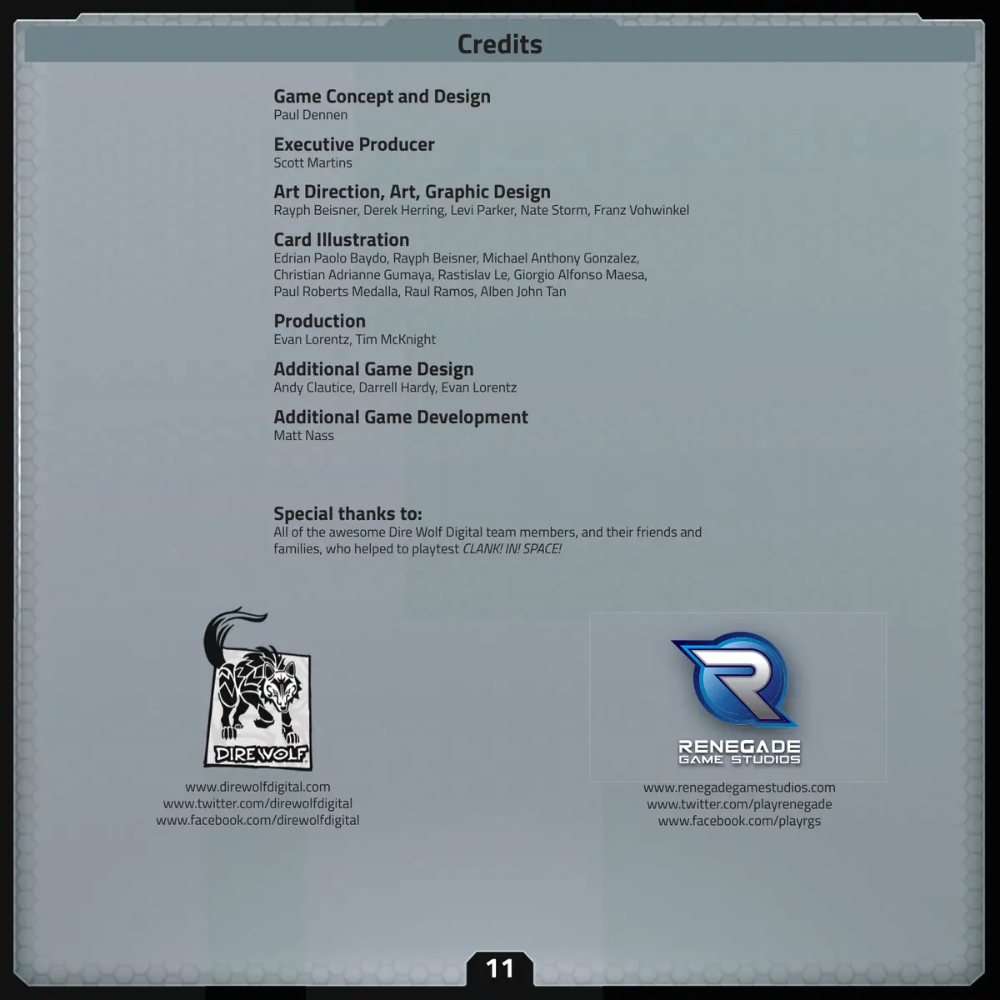
📝 第 11 页 AI 机翻对照（点击展开）
游戏概念与设计
Paul Dennen
执行制片人
Scott Martins
艺术指导、艺术、平面设计
Rayph Beisner, Derek Herring, Levi Parker, Nate Storm, Franz Vohwinkel
卡牌插画
Edrian Paolo Baydo, Rayph Beisner, Michael Anthony Gonzalez,
Christian Adrianne Gumaya, Rastislav Le, Giorgio Alfonso Maesa,
Paul Roberts Medalla, Raul Ramos, Alben John Tan
制作
Evan Lorentz, Tim McKnight
额外游戏设计
Andy Clautice, Darrell Hardy, Evan Lorentz
额外游戏开发
Matt Nass
特别感谢：
所有出色的Dire Wolf Digital团队成员，以及他们的朋友和家人，
他们帮助测试了《CLANK! IN! SPACE!》
www.direwolfdigital.com
www.twitter.com/direwolfdigital
www.facebook.com/direwolfdigital
www.renegadegamestudios.com
www.twitter.com/playrenegade
www.facebook.com/playrgs
制作人员名单
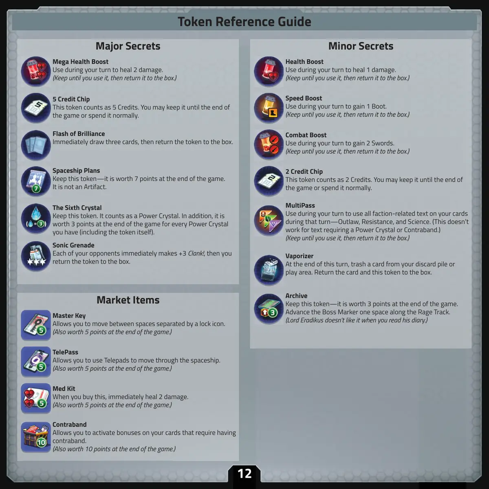
📝 第 12 页 AI 机翻对照（点击展开）
主要秘密
巨型生命提升
在你的回合期间使用，治疗2点伤害。
（保留直到你使用它，然后将其放回盒中。）
5信用筹码
这个指示物算作5点信用。你可以保留它直到游戏结束或正常使用它。
才华迸发
立即抽三张牌，然后将这个指示物放回盒中。
宇宙飞船蓝图
保留这个指示物——它在游戏结束时价值7分。
它不是一件神器。
第六水晶
保留这个指示物。它算作一个能量水晶。此外，在游戏结束时，你拥有的每个能量水晶（包括这个指示物本身）都让它价值3分。
声波手雷
你的每个对手立即获得+3点噪音！，然后将这个指示物放回盒中。
市场物品
主钥匙
允许你在带有锁图标的区域之间移动。
（在游戏结束时也价值5分。）
传送通行证
允许你使用传送垫在宇宙飞船内移动。
（在游戏结束时也价值5分。）
医疗包
当你购买此物品时，立即治疗2点伤害。
（在游戏结束时也价值5分。）
违禁品
允许你激活卡牌上要求拥有违禁品的奖励效果。
（在游戏结束时也价值10分。）
次要秘密
生命提升
在你的回合期间使用，治疗1点伤害。
（保留直到你使用它，然后将其放回盒中。）
速度提升
在你的回合期间使用，获得1个靴子。
（保留直到你使用它，然后将其放回盒中。）
战斗提升
在你的回合期间使用，获得2把剑。
（保留直到你使用它，然后将其放回盒中。）
2信用筹码
这个指示物算作2点信用。你可以保留它直到游戏结束或正常使用它。
多重通行证
在你的回合期间使用，在该回合期间使用你卡牌上所有派系相关文本——亡命之徒、抵抗组织和科学。（这不适用于需要能量水晶或违禁品的文本。）
（保留直到你使用它，然后将其放回盒中。）
汽化器
在本回合结束时，从你的弃牌堆或游戏区域中弃掉一张牌。将这张牌和这个指示物放回盒中。
档案
保留这个指示物——它在游戏结束时价值3分。
将Boss标记沿愤怒轨道向前移动一格。
（厄拉迪克斯大人不喜欢你读他的日记。）